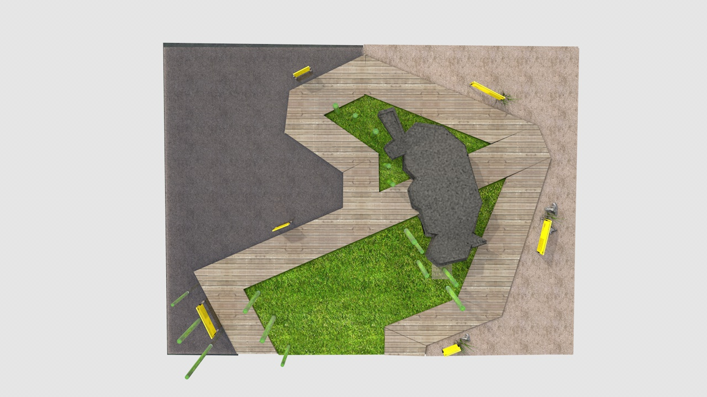
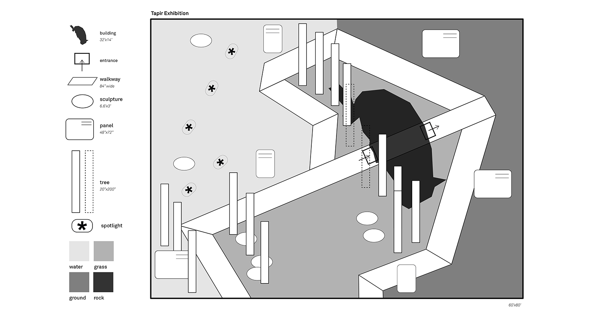
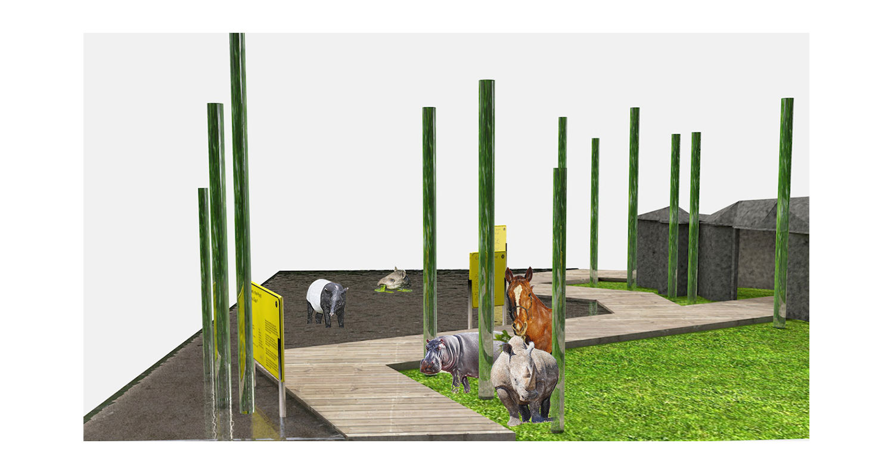
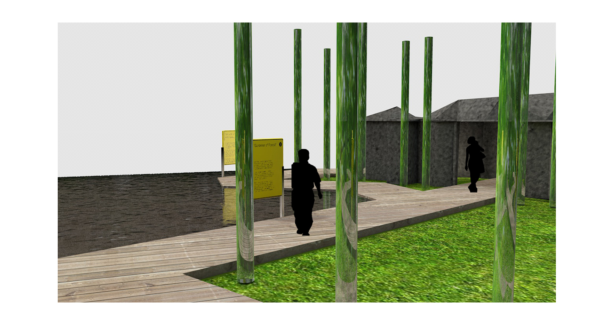
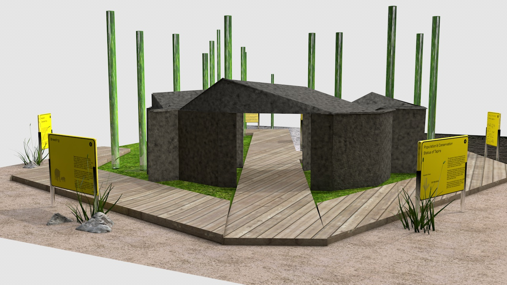
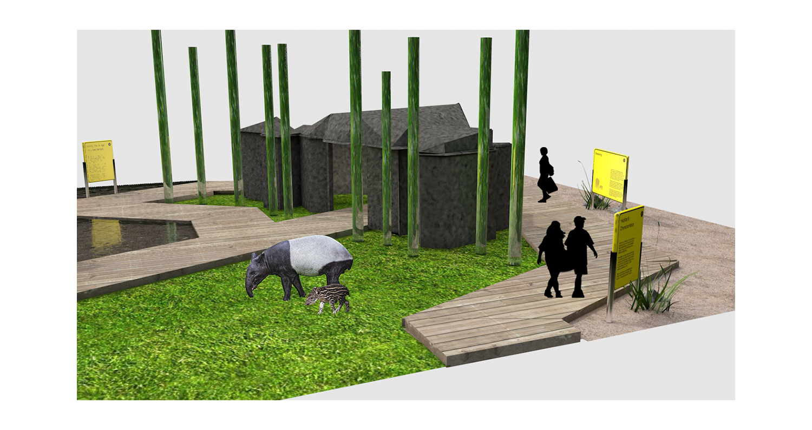

An exhibition space for the animal 'tapir' is created. The distinct characteristics of tapir being one of the Umbrella Species, the shape of the walkway resembles the image of an umbrella.

Floor plan





Exhibition Signs
As tapir is classified as endangered animals, the exhibition signs are inspired by the signs at the conservation parks.